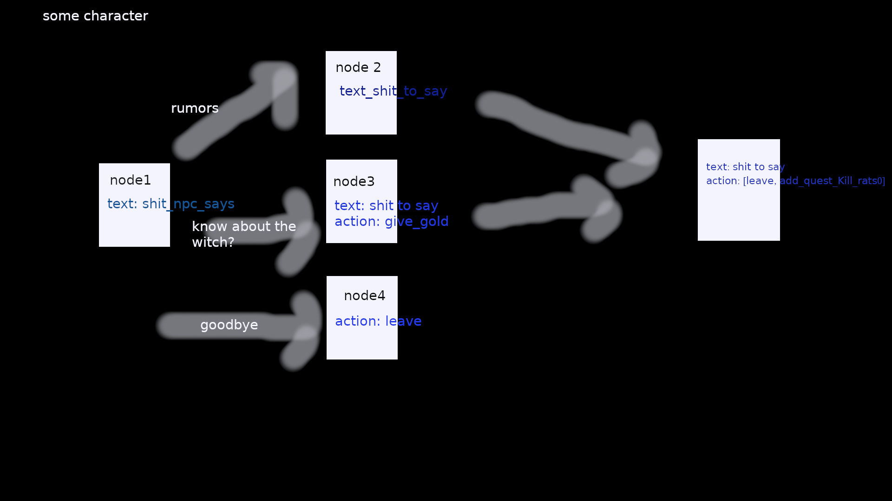

Obsidian games basically defines the style I'm talking about, but style is fairly generic.
See games:
Kotor 2 - Voice acted, branching choices that will often converge back into a forced choice
Morrowind - Text based, notice the expanation of a small set of choices, leading to a large set of choices. Also, the books also probably could just reuse the text convo system (even if the usage is basic)
Planescape Tormet - Another text based, just note a different style than morrowind in presentation, but same difference
Whether the conversation is text, or dialog, or something else entirely, doesn't matter. System should be generic enough to handle this. So how does this basically work, by basically creating a representation like this per conversation. Obviously this could connect in any which way. There could be cycles I guess. Get it?

How do you build this graph? Ingest some config. Simplest thing I can think of, just a bunch of things that follow the format: nodename_from, connection, nodename_to
| start, rumors, node1 |
| start, ask about witch, node3 |
| start, goodbye, node4 |
| node1, next, final_node |
| node3, next, final_node |
And the node data, nodename, key, value.
Notice how the data here is all generic. This conversation doesn't really know about text, or adding quests, whatever. It's really just a property bag.
| start, text, add whatever intro text here whatever blah blah |
| node1, text, add whatever more here |
| node1, audio, some/path/to/audiofile.mp3 |
| final_node, action, add_quest |
| final_node, quest_data, kill_rats |
So just toss that into a file and parse it. At first, just define it inline as a struct array. Easy. How to interact w/ in C++? Basically it'll be up to the game logic to actually implement speaking, etc, but it'll want to do this basically:
auto conversationSystem = initConversationSystem(nameOftheConversationConfig);
getNodeInfo(conversationSystem, nodeName); // --> returns the node info. So all data for the node + transitions.
// A reasonable, but not necessarily what to use for this
struct Node {
std::string name;
std::map transitionNameToNode;
std::map properties; // See note below
};
Additional notes: Notice this design already allows for interesting behavior. For example, if I choose to make the conversations start from where the player quit out (say I just hitting escape to quit out), I can for example, just store the last node id from the calling code.
If I want the conversation system to be in charge of that flow control, I can use those data properties, say one in node info and sponsor that persistance from the calling code. Just say, define a key called persist (value irrelevant)